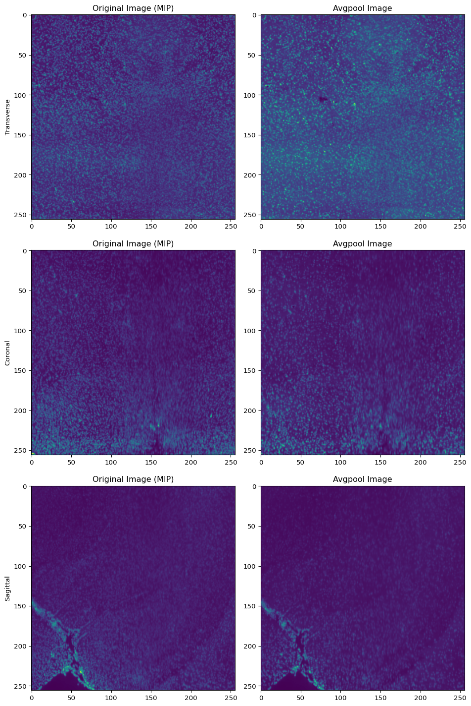
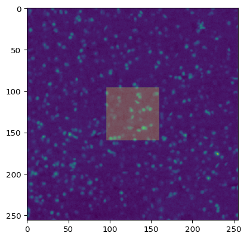
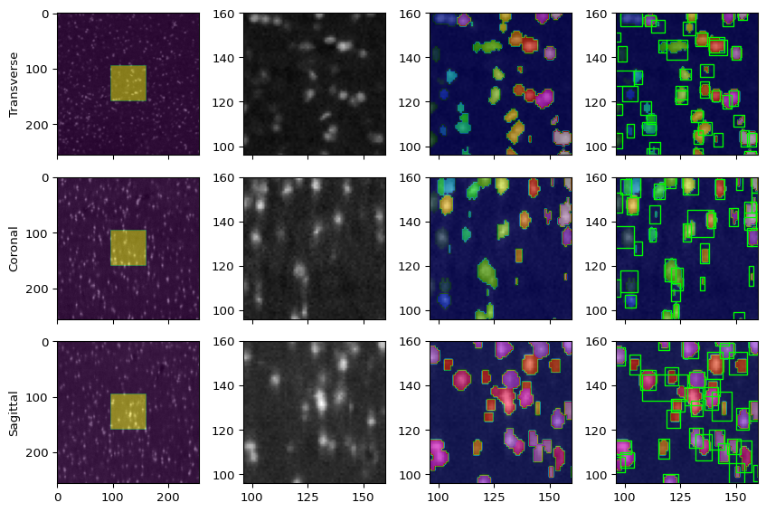

[1]:
import numpy as np
import matplotlib.pyplot as plt
import os
import h5py
import time
import nibabel as nib
import importlib as imp
import sys
sys.path.append('/ifshome/abenneck/docs_public/yolo_model/docs/scripts')
import yolo_tiles
imp.reload(yolo_tiles)
from yolo_tiles import img_to_tiles, apply_model_to_tiles, load_test_image, preprocess, tileDataset, remove_bbox_in_overlap
import yolo_help
imp.reload(yolo_help)
from yolo_help import bbox_to_rectangles, imshow, convert_data, Net, get_best_bounding_box_per_cell
import yolo_post_help
imp.reload(yolo_post_help)
from yolo_post_help import remove_low_conf_bboxes, postprocess, bb_to_rec
import yolo_help_3D
imp.reload(yolo_help_3D)
from yolo_help_3D import apply_model_to_orthogonal_slices, gen_3D_GT, recon_down, vol_to_mip_rgb, orthogonal_to_3D, vol_to_mip
import yolo_avg_prec
imp.reload(yolo_avg_prec)
from yolo_avg_prec import get_AP, gt_bbox_to_pred_bbox_format, IOU_3D, yolo_output_to_list
Load the original volume¶
[3]:
raw_image_file_first_two_views = '/nafs/shattuck/RodentToolsData/Stacked/Ex_488_Em_525_stitched_chunk32.h5'
vol = h5py.File(raw_image_file_first_two_views)
vol['stack'].shape
[3]:
(3600, 8587, 7321)
(0) Extract a cube (s=1024) + downsample via avg-pooling¶
Extract cube 2,5,3 (s=1024)¶
[3]:
cube_i, cube_j, cube_k = 2,5,3
s = 1024
start_i = cube_i*s
start_j = cube_j*s
start_k = cube_k*s
end_i = min((cube_i+1)*s, vol['stack'].shape[0])
end_j = min((cube_j+1)*s, vol['stack'].shape[1])
end_k = min((cube_k+1)*s, vol['stack'].shape[2])
sub_vol = vol['stack'][start_i:end_i, start_j:end_j,start_k:end_k]
sub_vol.shape
[3]:
(1024, 1024, 1024)
Apply avg pooling in 4x4 neighborhoods¶
[4]:
ds_factor = 4
sub_vol_down = np.zeros([int(sub_vol.shape[0]/ds_factor), int(sub_vol.shape[1]/ds_factor), int(sub_vol.shape[2]/ds_factor)])
sub_vol_down.shape
for i in range(sub_vol_down.shape[0]):
start = time.time()
for j in range(sub_vol_down.shape[1]):
for k in range(sub_vol_down.shape[2]):
i_start, i_end = i*ds_factor, (i+1)*ds_factor
j_start, j_end = j*ds_factor, (j+1)*ds_factor
k_start, k_end = k*ds_factor, (k+1)*ds_factor
local_region = sub_vol[i_start:i_end, j_start:j_end, k_start:k_end]
avg_val = round(np.mean(local_region.ravel()))
sub_vol_down[i,j,k] = avg_val
print(f'Finished slice {i} in {time.time()-start:.2f}s')
if False:
# Define affine transform (assume voxel coordinates = world coordinates)
affine = np.eye(4)
# Create NIfTI image
vol_out = nib.Nifti1Image(sub_vol_down, affine)
# Save to disk
outdir = '/ifshome/abenneck/docs_public/misc_outputs'
out_fname = f'avg_pool_cube_i{cube_i:04d}_j{cube_j:04d}_k{cube_k:04d}.nii.gz'
nib.save(vol_out, os.path.join(outdir, out_fname))
Finished slice 0 in 0.75s
Finished slice 1 in 0.79s
Finished slice 2 in 0.78s
Finished slice 3 in 0.77s
Finished slice 4 in 0.78s
Finished slice 5 in 0.77s
Finished slice 6 in 0.78s
Finished slice 7 in 0.83s
Finished slice 8 in 0.81s
Finished slice 9 in 0.81s
Finished slice 10 in 0.80s
Finished slice 11 in 0.77s
Finished slice 12 in 0.74s
Finished slice 13 in 0.75s
Finished slice 14 in 0.79s
Finished slice 15 in 0.79s
Finished slice 16 in 0.81s
Finished slice 17 in 0.82s
Finished slice 18 in 0.80s
Finished slice 19 in 0.79s
Finished slice 20 in 0.76s
Finished slice 21 in 0.65s
Finished slice 22 in 0.63s
Finished slice 23 in 0.64s
Finished slice 24 in 0.64s
Finished slice 25 in 0.65s
Finished slice 26 in 0.65s
Finished slice 27 in 0.65s
Finished slice 28 in 0.60s
Finished slice 29 in 0.66s
Finished slice 30 in 0.66s
Finished slice 31 in 0.61s
Finished slice 32 in 0.65s
Finished slice 33 in 0.68s
Finished slice 34 in 0.65s
Finished slice 35 in 0.65s
Finished slice 36 in 0.67s
Finished slice 37 in 0.66s
Finished slice 38 in 0.64s
Finished slice 39 in 0.63s
Finished slice 40 in 0.61s
Finished slice 41 in 0.64s
Finished slice 42 in 0.65s
Finished slice 43 in 0.64s
Finished slice 44 in 0.66s
Finished slice 45 in 0.64s
Finished slice 46 in 0.68s
Finished slice 47 in 0.64s
Finished slice 48 in 0.64s
Finished slice 49 in 0.65s
Finished slice 50 in 0.66s
Finished slice 51 in 0.66s
Finished slice 52 in 0.66s
Finished slice 53 in 0.64s
Finished slice 54 in 0.63s
Finished slice 55 in 0.64s
Finished slice 56 in 0.64s
Finished slice 57 in 0.63s
Finished slice 58 in 0.68s
Finished slice 59 in 0.65s
Finished slice 60 in 0.64s
Finished slice 61 in 0.63s
Finished slice 62 in 0.70s
Finished slice 63 in 0.64s
Finished slice 64 in 0.64s
Finished slice 65 in 0.63s
Finished slice 66 in 0.64s
Finished slice 67 in 0.64s
Finished slice 68 in 0.62s
Finished slice 69 in 0.66s
Finished slice 70 in 0.66s
Finished slice 71 in 0.65s
Finished slice 72 in 0.65s
Finished slice 73 in 0.63s
Finished slice 74 in 0.64s
Finished slice 75 in 0.70s
Finished slice 76 in 0.63s
Finished slice 77 in 0.64s
Finished slice 78 in 0.64s
Finished slice 79 in 0.62s
Finished slice 80 in 0.63s
Finished slice 81 in 0.64s
Finished slice 82 in 0.64s
Finished slice 83 in 0.66s
Finished slice 84 in 0.66s
Finished slice 85 in 0.64s
Finished slice 86 in 0.64s
Finished slice 87 in 0.64s
Finished slice 88 in 0.63s
Finished slice 89 in 0.63s
Finished slice 90 in 0.63s
Finished slice 91 in 0.66s
Finished slice 92 in 0.65s
Finished slice 93 in 0.64s
Finished slice 94 in 0.64s
Finished slice 95 in 0.64s
Finished slice 96 in 0.64s
Finished slice 97 in 0.65s
Finished slice 98 in 0.64s
Finished slice 99 in 0.61s
Finished slice 100 in 0.65s
Finished slice 101 in 0.67s
Finished slice 102 in 0.65s
Finished slice 103 in 0.66s
Finished slice 104 in 0.65s
Finished slice 105 in 0.64s
Finished slice 106 in 0.61s
Finished slice 107 in 0.64s
Finished slice 108 in 0.64s
Finished slice 109 in 0.66s
Finished slice 110 in 0.67s
Finished slice 111 in 0.65s
Finished slice 112 in 0.64s
Finished slice 113 in 0.67s
Finished slice 114 in 0.66s
Finished slice 115 in 0.63s
Finished slice 116 in 0.63s
Finished slice 117 in 0.65s
Finished slice 118 in 0.66s
Finished slice 119 in 0.64s
Finished slice 120 in 0.64s
Finished slice 121 in 0.65s
Finished slice 122 in 0.64s
Finished slice 123 in 0.65s
Finished slice 124 in 0.61s
Finished slice 125 in 0.63s
Finished slice 126 in 0.65s
Finished slice 127 in 0.66s
Finished slice 128 in 0.66s
Finished slice 129 in 0.64s
Finished slice 130 in 0.64s
Finished slice 131 in 0.64s
Finished slice 132 in 0.62s
Finished slice 133 in 0.64s
Finished slice 134 in 0.60s
Finished slice 135 in 0.64s
Finished slice 136 in 0.61s
Finished slice 137 in 0.61s
Finished slice 138 in 0.65s
Finished slice 139 in 0.62s
Finished slice 140 in 0.61s
Finished slice 141 in 0.62s
Finished slice 142 in 0.62s
Finished slice 143 in 0.61s
Finished slice 144 in 0.62s
Finished slice 145 in 0.61s
Finished slice 146 in 0.61s
Finished slice 147 in 0.61s
Finished slice 148 in 0.62s
Finished slice 149 in 0.61s
Finished slice 150 in 0.61s
Finished slice 151 in 0.61s
Finished slice 152 in 0.61s
Finished slice 153 in 0.61s
Finished slice 154 in 0.65s
Finished slice 155 in 0.62s
Finished slice 156 in 0.61s
Finished slice 157 in 0.61s
Finished slice 158 in 0.61s
Finished slice 159 in 0.61s
Finished slice 160 in 0.62s
Finished slice 161 in 0.62s
Finished slice 162 in 0.61s
Finished slice 163 in 0.62s
Finished slice 164 in 0.61s
Finished slice 165 in 0.62s
Finished slice 166 in 0.61s
Finished slice 167 in 0.64s
Finished slice 168 in 0.61s
Finished slice 169 in 0.62s
Finished slice 170 in 0.59s
Finished slice 171 in 0.65s
Finished slice 172 in 0.62s
Finished slice 173 in 0.63s
Finished slice 174 in 0.62s
Finished slice 175 in 0.62s
Finished slice 176 in 0.61s
Finished slice 177 in 0.61s
Finished slice 178 in 0.62s
Finished slice 179 in 0.64s
Finished slice 180 in 0.62s
Finished slice 181 in 0.62s
Finished slice 182 in 0.61s
Finished slice 183 in 0.62s
Finished slice 184 in 0.61s
Finished slice 185 in 0.63s
Finished slice 186 in 0.61s
Finished slice 187 in 0.62s
Finished slice 188 in 0.61s
Finished slice 189 in 0.62s
Finished slice 190 in 0.62s
Finished slice 191 in 0.61s
Finished slice 192 in 0.61s
Finished slice 193 in 0.62s
Finished slice 194 in 0.63s
Finished slice 195 in 0.62s
Finished slice 196 in 0.61s
Finished slice 197 in 0.61s
Finished slice 198 in 0.61s
Finished slice 199 in 0.61s
Finished slice 200 in 0.62s
Finished slice 201 in 0.61s
Finished slice 202 in 0.61s
Finished slice 203 in 0.61s
Finished slice 204 in 0.62s
Finished slice 205 in 0.61s
Finished slice 206 in 0.65s
Finished slice 207 in 0.62s
Finished slice 208 in 0.63s
Finished slice 209 in 0.61s
Finished slice 210 in 0.61s
Finished slice 211 in 0.61s
Finished slice 212 in 0.62s
Finished slice 213 in 0.61s
Finished slice 214 in 0.62s
Finished slice 215 in 0.63s
Finished slice 216 in 0.61s
Finished slice 217 in 0.61s
Finished slice 218 in 0.61s
Finished slice 219 in 0.61s
Finished slice 220 in 0.61s
Finished slice 221 in 0.62s
Finished slice 222 in 0.61s
Finished slice 223 in 0.63s
Finished slice 224 in 0.62s
Finished slice 225 in 0.59s
Finished slice 226 in 0.61s
Finished slice 227 in 0.62s
Finished slice 228 in 0.62s
Finished slice 229 in 0.62s
Finished slice 230 in 0.62s
Finished slice 231 in 0.62s
Finished slice 232 in 0.62s
Finished slice 233 in 0.62s
Finished slice 234 in 0.62s
Finished slice 235 in 0.62s
Finished slice 236 in 0.62s
Finished slice 237 in 0.64s
Finished slice 238 in 0.62s
Finished slice 239 in 0.62s
Finished slice 240 in 0.62s
Finished slice 241 in 0.61s
Finished slice 242 in 0.62s
Finished slice 243 in 0.62s
Finished slice 244 in 0.61s
Finished slice 245 in 0.62s
Finished slice 246 in 0.62s
Finished slice 247 in 0.62s
Finished slice 248 in 0.62s
Finished slice 249 in 0.62s
Finished slice 250 in 0.62s
Finished slice 251 in 0.61s
Finished slice 252 in 0.62s
Finished slice 253 in 0.62s
Finished slice 254 in 0.61s
Finished slice 255 in 0.61s
Compare the original image with the avgpool version¶
[7]:
indir = '/ifshome/abenneck/docs_public/misc_outputs'
cube_i, cube_j, cube_k = 2,5,3
data_fname = f'avg_pool_cube_i{cube_i:04d}_j{cube_j:04d}_k{cube_k:04d}.nii.gz'
sub_vol = nib.load(os.path.join(indir, data_fname)).get_fdata()
orig_idx0 = sub_vol.shape[0] // 2
orig_idx1 = sub_vol.shape[1] // 2
orig_idx2 = sub_vol.shape[2] // 2
down_idx0 = sub_vol_down.shape[0] // 2
down_idx1 = sub_vol_down.shape[1] // 2
down_idx2 = sub_vol_down.shape[2] // 2
sub_vol_mip0 = vol_to_mip(sub_vol, 0, ds_factor = 4, slice_idx = orig_idx0)
sub_vol_mip1 = vol_to_mip(sub_vol, 1, ds_factor = 4, slice_idx = orig_idx1)
sub_vol_mip2 = vol_to_mip(sub_vol, 2, ds_factor = 4, slice_idx = orig_idx2)
fig, axs = plt.subplots(3,2, layout='tight')
axs[0,0].imshow(sub_vol_mip0)
axs[0,0].set_ylabel('Transverse')
axs[0,1].imshow(sub_vol_down[down_idx0,:,:])
axs[0,0].set_title('Original Image (MIP)')
axs[0,1].set_title('Avgpool Image')
axs[1,0].imshow(sub_vol_mip1)
axs[1,0].set_ylabel('Coronal')
axs[1,1].imshow(sub_vol_down[:,down_idx1,:])
axs[1,0].set_title('Original Image (MIP)')
axs[1,1].set_title('Avgpool Image')
axs[2,0].imshow(sub_vol_mip2)
axs[2,0].set_ylabel('Sagittal')
axs[2,1].imshow(sub_vol_down[:,:,down_idx2])
axs[2,0].set_title('Original Image (MIP)')
axs[2,1].set_title('Avgpool Image')
fig.set_size_inches(10,15)

(1) Extract a cube from the original image (d=256)¶
[23]:
cube_i, cube_j, cube_k = 2,5,3
s = 1024
d = 256
start_i = cube_i*s
start_j = cube_j*s
start_k = cube_k*s
end_i = min(cube_i * s + d, vol['stack'].shape[0])
end_j = min(cube_j * s + d, vol['stack'].shape[1])
end_k = min(cube_k * s + d, vol['stack'].shape[2])
sub_vol = vol['stack'][start_i:end_i, start_j:end_j,start_k:end_k]
if False:
# Define affine transform (assume voxel coordinates = world coordinates)
affine = np.eye(4)
# Create NIfTI image
vol_out = nib.Nifti1Image(sub_vol, affine)
# Save to disk
outdir = '/ifshome/abenneck/docs_public/misc_outputs'
out_fname = f'cube_i{cube_i:04d}_j{cube_j:04d}_k{cube_k:04d}.nii.gz'
nib.save(vol_out, os.path.join(outdir, out_fname))
Create a 0-mask, and set the central cube (s=64) to 1¶
[26]:
mask_out = np.zeros(sub_vol.shape)
inner_shape = [int(i) for i in (np.array(sub_vol.shape) / 4)]
mask_inner = np.ones(inner_shape)
mask_out[96:160,96:160,96:160] = mask_inner
if False:
# Define affine transform (assume voxel coordinates = world coordinates)
affine = np.eye(4)
# Create NIfTI image
vol_out = nib.Nifti1Image(mask_out, affine)
# Save to disk
outdir = '/ifshome/abenneck/docs_public/misc_outputs'
out_fname = f'mask{inner_shape[0]}_i{cube_i:04d}_j{cube_j:04d}_k{cube_k:04d}.nii.gz'
nib.save(vol_out, os.path.join(outdir, out_fname))
[27]:
fig, ax = plt.subplots()
ax.imshow(sub_vol[128,:,:])
ax.imshow(mask_out[128,:,:], alpha = 0.25)
[27]:
<matplotlib.image.AxesImage at 0x7fda8963b190>

(2) Load the annotated GT mask and convert it into a list of bboxes¶
[2]:
# Load the GT annotation
mask_path = '/ifshome/abenneck/docs_public/yolo_model/docs/inputs/mask64_i0002_j0005_k0003_annotated.nii.gz'
mask = nib.load(mask_path)
# 0: Bg, 1: Annotated bg, 2+: Cell ID
gt_bb = []
vals_to_skip = [0, 1]
for val in np.unique(mask.get_fdata()):
if val in vals_to_skip:
continue
mask_cell = np.copy(mask.get_fdata())
mask_cell[mask_cell != val] = 0.0
mask_cell[mask_cell == val] = 1.0
# print(f'Cell {val} volume of {np.sum(mask_cell)} voxels')
all_x, all_y, all_z = np.where(mask_cell == 1.0)
gt_bb.append([min(all_x).item(), max(all_x).item(), min(all_y).item(), max(all_y).item(), min(all_z).item(), max(all_z).item(), int(val)])
print(f'{len(gt_bb)} cells in the volume')
276 cells in the volume
Visualize the boxes¶
[3]:
def bb_slice_filter(all_bb, ax_idx, slice_val):
bb_out = []
for bb in all_bb:
if ax_idx == 0 and bb[0] <= slice_val and bb[1] >= slice_val:
bb_out.append(bb)
elif ax_idx == 1 and bb[2] <= slice_val and bb[3] >= slice_val:
bb_out.append(bb)
elif ax_idx == 2 and bb[4] <= slice_val and bb[5] >= slice_val:
bb_out.append(bb)
else:
continue
return np.stack(bb_out, axis=0)
[4]:
img_path = '/ifshome/abenneck/docs_public/misc_outputs/gt_data/cube_i0002_j0005_k0003.nii.gz'
img = nib.load(img_path)
img = img.get_fdata()
img0 = img[img.shape[0]//2,:,:]
img1 = img[:,img.shape[1]//2,:]
img2 = img[:,:,img.shape[2]//2]
mask_path = '/ifshome/abenneck/docs_public/yolo_model/docs/inputs/mask64_i0002_j0005_k0003_annotated.nii.gz'
mask = nib.load(mask_path)
mask = mask.get_fdata()
mask0 = mask[mask.shape[0]//2,:,:]
mask1 = mask[:,mask.shape[1]//2,:]
mask2 = mask[:,:,mask.shape[2]//2]
boundary_mask_path = '/ifshome/abenneck/docs_public/misc_outputs/gt_data/mask64_i0002_j0005_k0003.nii.gz'
boundary_mask = nib.load(boundary_mask_path)
boundary_mask = boundary_mask.get_fdata()
boundary_mask0 = boundary_mask[boundary_mask.shape[0]//2,:,:]
boundary_mask1 = boundary_mask[:,boundary_mask.shape[1]//2,:]
boundary_mask2 = boundary_mask[:,:,boundary_mask.shape[2]//2]
lim = [96,160]
fig, axs = plt.subplots(3, 4, layout='tight', sharex='col')
axs[0,0].imshow(img0, cmap = 'gray')
axs[0,0].imshow(boundary_mask0, alpha = 0.5)
axs[0,1].imshow(img0, cmap = 'gray')
axs[0,2].imshow(img0, cmap = 'gray')
axs[0,2].imshow(mask0, cmap = 'gist_ncar', alpha = 0.5)
axs[0,3].imshow(img0, cmap = 'gray')
axs[0,3].imshow(mask0, cmap = 'gist_ncar', alpha = 0.5)
bb_plot = bb_to_rec(bb_slice_filter(gt_bb, 0, img.shape[0]//2), pos = [4, 2, 5, 3], fc='none', ec='lime')
axs[0,3].add_collection(bb_plot)
axs[0,0].set_ylabel('Transverse')
axs[1,0].imshow(img1, cmap = 'gray')
axs[1,0].imshow(boundary_mask1, alpha = 0.5)
axs[1,1].imshow(img1, cmap = 'gray')
axs[1,2].imshow(img1, cmap = 'gray')
axs[1,2].imshow(mask1, cmap = 'gist_ncar', alpha = 0.5)
axs[1,3].imshow(img1, cmap = 'gray')
axs[1,3].imshow(mask1, cmap = 'gist_ncar', alpha = 0.5)
bb_plot = bb_to_rec(bb_slice_filter(gt_bb, 1, img.shape[1]//2), pos = [4, 0, 5, 1], fc='none', ec='lime')
axs[1,3].add_collection(bb_plot)
axs[1,0].set_ylabel('Coronal')
axs[2,0].imshow(img2, cmap = 'gray')
axs[2,0].imshow(boundary_mask2, alpha = 0.5)
axs[2,1].imshow(img2, cmap = 'gray')
axs[2,2].imshow(img2, cmap = 'gray')
axs[2,2].imshow(mask2, cmap = 'gist_ncar', alpha = 0.5)
axs[2,3].imshow(img2, cmap = 'gray')
axs[2,3].imshow(mask2, cmap = 'gist_ncar', alpha = 0.5)
bb_plot = bb_to_rec(bb_slice_filter(gt_bb, 2, img.shape[2]//2), pos = [2, 0, 3, 1], fc='none', ec='lime')
axs[2,3].add_collection(bb_plot)
axs[2,0].set_ylabel('Sagittal')
for ax in axs:
for ax_i in ax[1:]:
ax_i.set_xlim(lim)
ax_i.set_ylim(lim)
fig.set_size_inches(9,6)

[9]:
bb_slice_filter(gt_bb, 1, img.shape[1]//2)
[9]:
array([[106, 114, 124, 130, 95, 98, 4],
[128, 138, 127, 134, 95, 104, 6],
[144, 153, 126, 132, 95, 99, 8],
[108, 118, 120, 129, 98, 106, 21],
[101, 107, 122, 130, 100, 105, 33],
[151, 161, 126, 132, 103, 107, 44],
[125, 131, 128, 134, 104, 108, 48],
[131, 137, 125, 131, 111, 114, 75],
[139, 147, 121, 128, 111, 116, 76],
[150, 157, 126, 131, 113, 118, 85],
[113, 123, 125, 132, 118, 123, 103],
[109, 119, 127, 134, 121, 126, 104],
[ 92, 100, 126, 131, 117, 121, 105],
[155, 166, 125, 131, 118, 123, 107],
[104, 112, 122, 128, 121, 125, 111],
[ 95, 103, 122, 130, 122, 124, 116],
[131, 139, 127, 135, 126, 130, 128],
[133, 145, 108, 128, 128, 140, 129],
[152, 161, 126, 133, 126, 133, 140],
[109, 115, 124, 128, 134, 136, 175],
[121, 130, 122, 129, 134, 138, 177],
[137, 144, 125, 132, 137, 141, 180],
[150, 159, 124, 130, 141, 145, 198],
[138, 146, 122, 128, 147, 151, 229],
[129, 137, 123, 129, 155, 160, 231],
[ 91, 99, 128, 135, 149, 154, 243],
[154, 161, 128, 134, 150, 153, 244],
[136, 144, 122, 130, 154, 159, 258],
[142, 149, 122, 128, 154, 159, 259],
[111, 120, 128, 134, 156, 158, 267],
[153, 163, 123, 129, 157, 160, 273],
[144, 153, 128, 133, 157, 160, 274],
[143, 151, 125, 130, 101, 106, 281],
[152, 159, 127, 133, 98, 103, 282]])
[ ]:
[ ]: